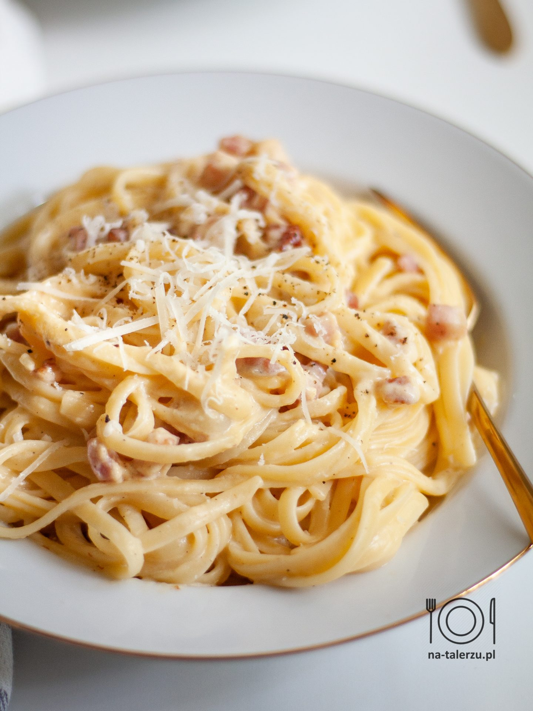

Spaghetti Carbonara

Description
Recipe for traditional italian spaghetti carbonara
You can substitute guanciale for pancetta or bacon
Ingredients
- Spaghetti
- Guanciale
- Pecorino Romano
- Egg yolks
- Salt
- Pepper
Steps
- Fry the Guanciale on a pan
- Mix the cheese and egg yolks
- Boil the spaghetti. The guanciale is salty, so don't add too much salt to the water
- Save a bit of the water from the spaghetti
- Add spaghetti to the guanciale and mix it with the egg and cheese mix. Make sure the heat isn't too high, so the egg doesn't scramble
- Add spaghetti water to make the dish creamy
- serve with extra cheese and freshly ground black pepper
Home